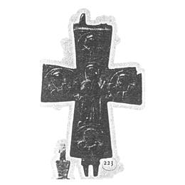

Catalog › CE-0099 · KHA1900-223
Encolpion de aramă cu Maica Domnului din Vlaherne (Orantă) pe revers
XII–XIII в. (1101–1300) · Sahnovka (Сахновка), ținutul Kaniv, gubernia Kiev, Ucraina · Colecția B. I. și V. N. Khanenko, Kiev, inv. nr. 223 (numerotarea colecției Khanenko)
double-sided reliquary cross (enkolpion), aramă; XII–XIII в. (1101–1300); found at Sahnovka (Сахновка), ținutul Kaniv, gubernia Kiev, Ucraina; kept at Colecția B. I. și V. N. Khanenko, Kiev.


Identificare
- Categorie
- Encolpion bivalv (relicvar)
- Material
- Aramă
Iconografie
- Revers
- Maica Domnului Orantă; Evangheliști în medalioane
- Descriere revers
- Revers: în mijloc, în relief, Maica Domnului din Vlaherne (orantă); pe capete, medalioane cu doi evangheliști și cu inițialele numelor lor; sub brațele Maicii Domnului inscripție.
- Inscripții
- inițiale ale evangheliștilor în medalioane; sub brațele Maicii Domnului: МР ΘΥ
Datare și atribuire
- Datare
- XII–XIII в. (1101–1300)
- Centru
- Necunoscut
Descoperire
- Localitate
- Sahnovka (Сахновка)
- Regiune
- ținutul Kaniv, gubernia Kiev
- Țară
- Ucraina
- Context
- Necunoscut
- Coordonate
- 49.5137° N, 31.4410° E
- Precizia locului
- Doar localitatea
Păstrare și referințe
- Colecție
- Colecția B. I. și V. N. Khanenko, Kiev
- Nr. inventar
- nr. 223 (numerotarea colecției Khanenko)
- Bibliografie
- B. I. și V. N. Khanenko, Древности русскія. Кресты и образки, вып. II (Собраніе Б. И. и В. Н. Ханенко), Kiev, 1900 [Khanenko 1900], cat. nr. 223, Tabl. XIX, reprodusă la Табл. XIX, fig. 223 (planșa de la p. 16 a PDF-ului).
- Figura
- Табл. XIX, fig. 223
- Planșe
- Khanenko 1900, Табл. XIX (planșă fără paginație tipărită; p. 16 în PDF)
- Observații
- Datare după Khanenko: XII–XIII в. Se reproduce numai reversul. Inscripțiile sunt date în sursă în caractere decorative; aici în formă normalizată. Coordonate: ale localității (aproximative), nu date în sursă.
Citare: Corpus Encolpiorum, CE-0099, Encolpion de aramă cu Maica Domnului din Vlaherne (Orantă) pe revers, --root/piese/KHA1900-223/ (accesat 2026-10-20).